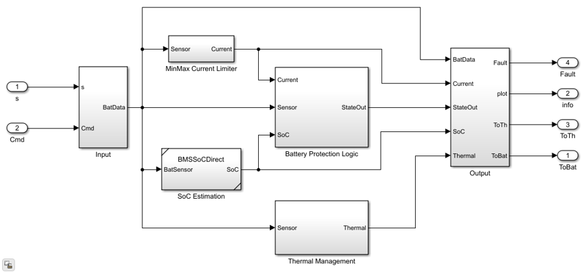

Vehicle Controller Variants
Component models — Controller, ControllerFRM, and ControllerHVAC reference BMS for relay and SOC signals.
Battery supervision and state-of-charge estimation
Component path: Components / BMS

Battery management system component for the BEV high-voltage battery. The BMS monitors cell voltages, currents, and temperatures against configurable safety limits, issues relay commands, provides SOC estimation, and raises fault flags when operating limits are exceeded.
Treat BMS as the protection and relay-management shell. Choose the SOC estimator inside it: direct coulomb counting is fast and transparent, while the EKF is appropriate when observer accuracy and measurement noise are part of the study.
| Model | Description | Use case | Templates | Documentation & files |
|---|---|---|---|---|
| BMS | Fault monitoring, relay commands, and configurable SOC estimation. | All vehicle configurations requiring battery protection, relay management, and SOC reporting. | VehicleElectric, VehicleElecAux, VehicleElectroThermal | Documentation · Parameters |
| BMSSoCDirect | Coulomb-counting SOC estimation with drift-free short simulations. | Simulations where SOC estimation accuracy is secondary or as a baseline for comparison. | VehicleElectric, VehicleElecAux, VehicleElectroThermal | Documentation · Parameters |
| BMSSoCEKF | Extended Kalman filter for improved SOC accuracy under noise. | Studies focused on SOC estimation performance, observer tuning, or BMS algorithm development. | VehicleElectroThermal | Documentation · Parameters |
Workflow/Vehicle/RangeEstimation/) — The BMS monitors battery health and issues relay commands during drive-cycle runs.Workflow/Battery/BatterySizing/) — BMS parameters (cell limits, thermal thresholds) affect the feasible operating range during sizing sweeps.Component models — Controller, ControllerFRM, and ControllerHVAC reference BMS for relay and SOC signals.
Related workflow — Develops an additional temperature signal for battery management.
All fidelities share the same boundary so variants can be exchanged in place. The SOC output computation differs (coulomb counting vs. EKF) but port names and directions are identical.
| Port / signal | Direction | Description |
|---|---|---|
| Cell voltage | Input | Measured cell terminal voltage. |
| Pack current | Input | Measured pack current. |
| Cell temperature | Input | Measured cell temperature. |
| Charge command | Input | Requested charge/discharge mode. |
| Positive relay command | Output | Connects battery positive terminal. |
| Negative relay command | Output | Connects battery negative terminal. |
| SOC estimate | Output | Estimated state of charge. |
| Fault flags | Output | Over-voltage, under-voltage, over-current, over-temperature. |
| Coolant command | Output | Thermal management enable based on temperature thresholds. |
Verify relay logic, fault thresholds, and SOC estimation under controlled inputs.
Run the maintained BMS test case before integration.
High-Voltage Battery | Vehicle Controller | Virtual Sensor